vignettes/Usingxtractomatic.Rmd
Usingxtractomatic.Rmdxtractomatic is an R package developed to subset and extract satellite and other oceanographic related data from a remote server. The program can extract data for a moving point in time along a user-supplied set of longitude, latitude and time points; in a 3D bounding box; or within a polygon (through time). The xtractomatic functions were originally developed for the marine biology tagging community, to match up environmental data available from satellites (sea-surface temperature, sea-surface chlorophyll, sea-surface height, sea-surface salinity, vector winds) to track data from various tagged animals or shiptracks (xtracto). The package has since been extended to include the routines that extract data a 3D bounding box (xtracto_3D) or within a polygon (xtractogon). The xtractomatic package accesses data that are served through the ERDDAP server at the NOAA/SWFSC Environmental Research Division in Santa Cruz, California. In order that the user not be overwhelmed when searching for datasets, only a selected number of the datasets on that ERDDAP server, those viewed as most useful, are supported. The ERDDAP server can also be directly accessed at http://coastwatch.pfeg.noaa.gov/erddap. ERDDAP is a simple to use yet powerful web data service developed by Bob Simons.
This is the third version of xtractomatic. The original version was created by Dave Foley for Matlab and was modified for R by Cindy Bessey and Dave Foley. That version used a precurser to ERDDAP called BobDAP. BobDAP was less flexible and provided access to fewer datasets than does ERDDAP. The second version of xtractomatic was written by Roy Mendelssohn to use ERDDAP rather than BobDAP. This version, also written by Roy Mendelssohn, has many improvements including access to many more datasets, improved speed, better error checking, crude search capabilites, and plotting routines, and is the first version as a true R package.
This version also includes the latest version of the cmocean colormaps, designed by Kristen Thyng (see http://matplotlib.org/cmocean/ and https://github.com/matplotlib/cmocean). These colormaps were initally developed for Python, and a version of the colormaps is used in the oce package by Dan Kelley and Clark Richards, but the colormaps used here are the version as of late 2017. The colormaps are loaded automatically as colors, see str(colors). Several of the examples make use of the cmocean colormaps.
The code has undergone a major refactoring, in particular there is no longer separate code to handle bathymetry and other datasets without time. In order to have a cleaner design to go with these changes, the order of the arguments to the functions has changed, “tpos” no longer has to be passed for a dataset without time, and “xlen” and “ylen” have default values (see next section). Also in xtracto() the return now includes the parameter name, so instead of one element being just “mean” it will be “mean sst” for example. The changes in the function arguments makes them closer to that in rerddapXtracto, see next section.
This will likely be the last version of xtractomatic, except for bug fixes or changes needed to stay compatible with new versions of R, or changes in ERDDAP and the applications it uses. Development effort will be put into improving the rerddapXtracto package, with the intent that users will eventually migrate to rerddapXtracto. As mentioned above, the changes in the function arguments will help to simplify this migration.
There are three main data extraction functions in the xtractomatic package:
xtracto <- function(dtype, xpos, ypos, tpos = NA, xlen = 0., ylen = 0., verbose=FALSE)
xtracto_3D <- function(dtype, xpos, ypos, tpos = NA, verbose=FALSE)
xtractogon <- function(dtype, xpos, ypos, tpos = NA, verbose = FALSE)
There are two information functions in the xtractomatic package:
`searchData <- function(searchList= “varname:chl”)
getInfo <- function(dtype)
The dtype parameter in the data extraction routines specifies a combination of which dataset on the ERDDAP server to access, and as well as which parameter from that dataset. The first sections demonstrate how to use these functions in realistic settings. The Selecting a dataset section shows how to find the dtype or other parameters of interest from the available datasets.
xtractomatic uses the httr, ncdf4, readr and sp packages, and these packages must be installed first or xtractomatic will fail to install.
install.packages("httr", dependencies = TRUE)
install.packages("ncdf4",dependencies = TRUE)
install.packages("readr", dependencies = TRUE)
install.packages("sp", dependencies = TRUE)The xtractomatic package is available from CRAN and can be installed by:
or the development version is available from [Github](https://github.com/rmendels/xtractomatic and can be installed from Github,
Once installed, to use xtractomatic do
If the other libraries (httr, ncdf4, readr and sp) have been installed they will be found and do not need to be explicitly loaded.
Besides the xtractomatic packages, the examples below depend on DT, ggplot2, lubridate, mapdata, and reshape2. These can be loaded beforehand (assuming they have been installed):
In order that the code snippets can be more stand-alone, the needed libraries are always required in the examples.
It should be emphasized that these other packages are used to manipulate and plot the data in R, other packages could be used as well. The use of xtractomatic does not depend on these other packages.
There are also several R functions defined within the document that are used in other code examples. These include chlaAvg, upwell, and plotUpwell.
In this section we extract data along a trackline found in the Marlintag38606 dataset, which is the track of a tagged marlin in the Pacific Ocean (courtesy of Dr. Mike Musyl of the Pelagic Research Group LLC), and show some simple plots of the extracted data.
The Marlintag38606 dataset is loaded when you load the xtractomatic library. The structure of this dataframe is shown by:
require(xtractomatic)
str(Marlintag38606)
#> 'data.frame': 152 obs. of 7 variables:
#> $ date : Date, format: "2003-04-23" "2003-04-24" ...
#> $ lon : num 204 204 204 204 204 ...
#> $ lat : num 19.7 19.8 20.4 20.3 20.3 ...
#> $ lowLon: num 204 204 204 204 204 ...
#> $ higLon: num 204 204 204 204 204 ...
#> $ lowLat: num 19.7 18.8 18.8 18.9 18.9 ...
#> $ higLat: num 19.7 20.9 21.9 21.7 21.7 ...The Marlintag38606 dataset consists of three variables, the date, longitude and latitude of the tagged fish, which are used as the xpos, ypos and tpos arguments in xtracto. The parameters xlen and ylen specify the spatial “radius” (actually a box, not a circle) around the point to search in for existing data. These can also be input as a time-dependent vector of values, but here a set value of 0.2 degrees is used. The example extracts SeaWiFS chlorophyll data, using a dataset that is an 8 day composite. This dataset is specified by the dtype of "swchla8day" in the xtracto function. In a later section it is explained how to access different satellite datasets other than the one shown here.
require(xtractomatic)
# First we will copy the Marlintag38606 data into a variable
# called tagData so that subsequent code will be more generic.
tagData <- Marlintag38606
xpos <- tagData$lon
ypos <- tagData$lat
tpos <- tagData$date
swchl <- xtracto("swchla8day", xpos, ypos, tpos = tpos, , xlen = .2, ylen = .2)This command can take a while to run depending on your internet speed and how busy is the server. With a fairly decent internet connection it took ~25 seconds. The default is to run in quiet mode, if you would prefer to see output, as confirmation that the script is running, use verbose=TRUE
When the extraction has completed the data frame swchl will contain as many columns as data points in the input file (in this case 152) and will have 11 columns:
str(swchl)
#> 'data.frame': 152 obs. of 11 variables:
#> $ mean chlorophyll : num 0.073 NaN 0.074 0.0653 0.0403 ...
#> $ stdev chlorophyll : num NA NA 0.00709 0.00768 0.02278 ...
#> $ n : int 1 0 16 4 7 9 4 3 0 6 ...
#> $ satellite date : chr "2003-04-19" "2003-04-27" "2003-04-27" "2003-04-27" ...
#> $ requested lon min : num 204 204 204 204 204 ...
#> $ requested lon max : num 204 204 204 204 204 ...
#> $ requested lat min : num 19.6 19.7 20.3 20.2 20.2 ...
#> $ requested lat max : num 19.8 19.9 20.5 20.4 20.4 ...
#> $ requested date : num 12165 12166 12172 12173 12174 ...
#> $ median chlorophyll: num 0.073 NA 0.073 0.0645 0.031 ...
#> $ mad chlorophyll : num 0 NA 0.00297 0.00741 0.0089 ...We plot the track line with the locations colored according to the mean of the satellite chlorophyll around that point. Positions where there was a tag location but no chlorophyll values are also shown.
require(ggplot2)
#> Loading required package: ggplot2
require(mapdata)
#> Loading required package: mapdata
#> Loading required package: maps
# First combine the two dataframes (the input and the output) into one,
# so it will be easy to take into account the locations that didn’t
# retrieve a value.
alldata <- cbind(swchl, tagData)
# adjust the longitudes to be (-180,180)
alldata$lon <- alldata$lon - 360
# Create a variable that shows if chla is missing
alldata$missing <- is.na(alldata$mean) * 1
colnames(alldata)[1] <- 'mean'
# set limits of the map
ylim <- c(15, 30)
xlim <- c(-160, -105)
# get outline data for map
w <- map_data("worldHires", ylim = ylim, xlim = xlim)
# plot using ggplot
myColor <- colors$algae
z <- ggplot(alldata,aes(x = lon, y = lat)) +
geom_point(aes(colour = mean, shape = factor(missing)), size = 2.) +
scale_shape_manual(values = c(19, 1))
z + geom_polygon(data = w, aes(x = long, y = lat, group = group), fill = "grey80") +
theme_bw() +
scale_colour_gradientn(colours = myColor, limits = c(0., 0.32), "Chla") +
coord_fixed(1.3, xlim = xlim, ylim = ylim) + ggtitle("Mean chla values at marlin tag locations")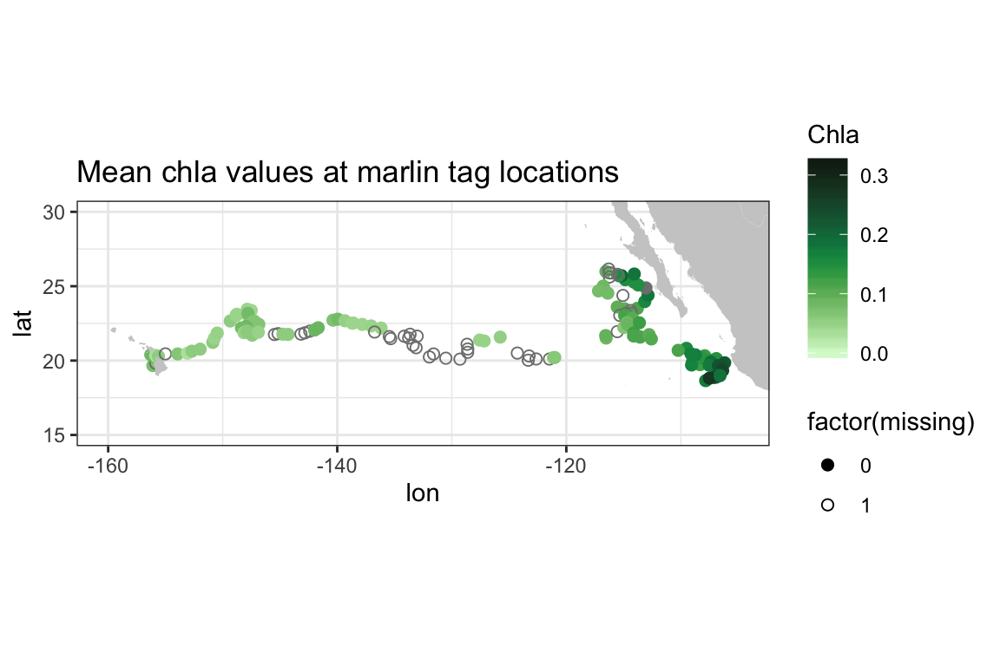
The xtracto routine extracts the environment data in a box (defined by xlen and ylen) around the given location, and calculates statistics of the data in that box. The median chla concentration may make more sense in this situation
require(ggplot2)
colnames(alldata)[10] <- 'median'
# plot using ggplot
myColor <- colors$algae
z <- ggplot(alldata,aes(x = lon,y = lat)) +
geom_point(aes(colour = median,shape = factor(missing)), size = 2.) +
scale_shape_manual(values = c(19, 1))
z + geom_polygon(data = w, aes(x = long, y = lat, group = group), fill = "grey80") +
theme_bw() +
scale_colour_gradientn(colours = myColor, limits = c(0., 0.32), "Chla") +
coord_fixed(1.3, xlim = xlim, ylim = ylim) + ggtitle(" Median chla values at marlin tag locations")In addition to satellite data, xtractomatic can access topographic data. As an example we extract and plot the water depth (bathymetry) associated with the trackline.
Get the topography data along the track:
require("xtractomatic")
ylim <- c(15, 30)
xlim <- c(-160, -105)
topo <- xtracto("ETOPO180", tagData$lon, tagData$lat, xlen = .1, ylen = .1)and plot the track:
require("ggplot2")
alldata <- cbind(topo, tagData)
alldata$lon <- alldata$lon - 360
colnames(alldata)[1] <- 'mean'
z <- ggplot(alldata, aes(x = lon,y = lat)) +
geom_point(aes(colour = mean), size = 2.) +
scale_shape_manual(values = c(19, 1))
z + geom_polygon(data = w, aes(x = long, y = lat, group = group), fill = "grey80") +
theme_bw() +
scale_colour_gradient("Depth") +
coord_fixed(1.3, xlim = xlim, ylim = ylim) + ggtitle("Bathymetry at marlin tag locations")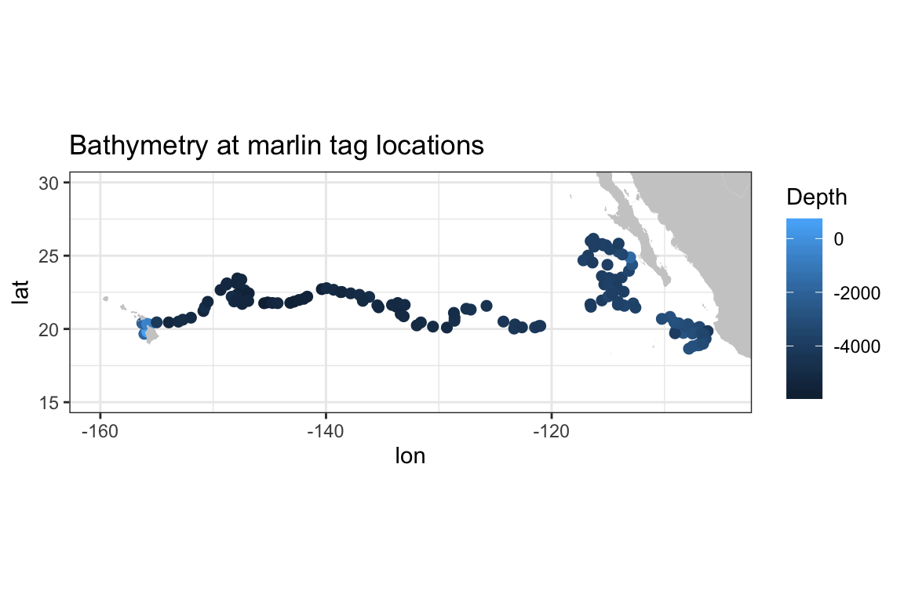
The above example uses data already converted to R format, but clearly the utility of the xtracto function lies in using it with one’s own dataset. This dataset was read in from a text file called Marlin-tag38606.txt, which is also made available when the xtractomatic package is loaded. To be able to refer to this file:
The first 5 lines of the file can be viewed:
datafile <- system.file("extdata", "Marlin-tag38606.txt", package = "xtractomatic")
system(paste("head -n5 ", datafile))and read in as follows:
Marlingtag38606 <- read.csv(datafile, head = TRUE, stringsAsFactors = FALSE, sep = "\t")
str(Marlingtag38606)
#> 'data.frame': 152 obs. of 7 variables:
#> $ date : chr "4/23/2003" "4/24/2003" "4/30/2003" "5/1/2003" ...
#> $ lon : num 204 204 204 204 204 ...
#> $ lat : num 19.7 19.8 20.4 20.3 20.3 ...
#> $ lowLon: num 204 204 204 204 204 ...
#> $ higLon: num 204 204 204 204 204 ...
#> $ lowLat: num 19.7 18.8 18.8 18.9 18.9 ...
#> $ higLat: num 19.7 20.9 21.9 21.7 21.7 ...The file Marlingtag38606.txt is a “tab” separated file, not a comma seperated file, so the sep option in the read.csv function above indicates that to the function, and stringsAsFactors = FALSE tells the function not to treat the dates as factors.
To be useful the date field, now formatted for example as 4/23/2003, needs to be converted to an R date field:
The format of the date has to be given because the dates in the file are not in one of the formats recognized by as.Date. A small y (%y) indicates the year has 2 digits (97) while a capital Y (%Y) indicates the year has 4 digits (1997). If your file is in the EU format with commas as decimal points and semicolons as field separators then use read.csv2 rather than read.csv.
This dataset includes the range of the 95% confidence interval for both the latitude and the longitude, which are the last four columns of data. In the example above the search “radius” was read into xtracto was a constant value of 0.2 degrees, but a vector can also be read in. To use the limits given in the file, create the vectors as follows:
xrad <- abs(Marlintag38606$higLon - Marlintag38606$lowLon)
yrad <- abs(Marlintag38606$higLat - Marlintag38606$lowLat)and then use these for the xlen and ylen inputs in xtracto:
xtracto_3D
This example extracts a time-series of monthly satellite chlorophyll data for the period 1998-2014 from three different satellites ( SeaWIFS, MODIS and VIIRS ), using the xtracto_3D function. The extract is for an area off the coast of California. xtracto_3D extracts data in a 3D bounding box where xpos has the minimum and maximum longitude, ypos has the minimum and maximum latitude, and tpos has the starting and ending time, given as “YYY-MM-DD”, describing the bounding box.
First we define the longitude, latitude and temporal boundaries of the box:
The extract will contain data at all of the longitudes, latitudes and times in the requested dataset that are within the given bounds.
If we run the xtracto_3D using the full temporal contraints defined above for SeaWiFS we get an error:
require(xtractomatic)
chlSeaWiFS <- xtracto_3D('swchlamday', xpos, ypos, tpos = tpos )
#> [1] "tpos (time) has elements out of range of the dataset"
#> [1] "time range in tpos"
#> [1] "1998-01-01,2014-11-30"
#> [1] "time range in ERDDAP data"
#> [1] "1997-09-16,2010-12-16 12:00:00"
#> Error in xtracto_3D("swchlamday", xpos, ypos, tpos = tpos): Coordinates out of dataset bounds - see messages aboveThe error occurs because the time-range specified is outside of the time-bounds of the requested dataset ( SeaWIFS data stopped in 2010). The error message generated by xtracto_3D explains this, and gives the temporal boundaries of the dataset. A simple way to extract to the end of a dataset is to use “last” (see Taking advantage of “last times”):
require(xtractomatic)
tpos <- c("1998-01-16", "last")
SeaWiFS <- xtracto_3D('swchlamday', xpos, ypos, tpos = tpos)A similar extract can be made for the MODIS dataset. We know that the time-range of the MODIS dataset is also smaller than that defined by tpos. We can determine the exact bounds of the MODIS dataset by using the getInfo function:
require(xtractomatic)
getInfo('mhchlamday')
#> List of 19
#> $ dtypename : chr "mhchlamday"
#> $ datasetname : chr "erdMH1chlamday"
#> $ longname : chr "Chlorophyll-a, Aqua MODIS, NPP, L3SMI, Global, Science Quality (Monthly Composite)"
#> $ varname : chr "chlorophyll"
#> $ hasAlt : logi FALSE
#> $ latSouth : logi FALSE
#> $ lon360 : logi FALSE
#> $ minLongitude : num -180
#> $ maxLongitude : num 180
#> $ longitudeSpacing: num 0.0417
#> $ minLatitude : num -90
#> $ maxLatitude : num 90
#> $ latitudeSpacing : num -0.0417
#> $ minAltitude : num NA
#> $ maxAltitude : num NA
#> $ minTime : chr "2003-01-16"
#> $ maxTime : chr "2019-01-16"
#> $ timeSpacing : num NA
#> $ infoURL : chr "http://oceancolor.gsfc.nasa.gov/"which gives us the min and max time of the dataset, which we can be used in the call (or use “last” as above):
require(xtractomatic)
tpos <- c('2003-01-16', "last")
MODIS <- xtracto_3D('mhchlamday', xpos, ypos, tpos = tpos)Similarly we can extract data from the VIIRS dataset.
require(xtractomatic)
tpos <- c("2012-01-15", "last")
VIIRS <- xtracto_3D('erdVH3chlamday', xpos, ypos, tpos = tpos)xtracto_3d returns a list of the form:
in this case the varname is chla, the ERDDAP datasetID is erdVH3chlamday, and data contains the data on the grid defined by longitude, latitude and time. The data from the different satellites can be compared by mapping the values for a given time period, which we cna do using the function plotBBox().
mapFrame <- function(longitude, latitude, chla){
dims <- dim(chla)
chla <- array(chla, dims[1] * dims[2])
longitude <- longitude - 360
chlaFrame <- expand.grid(x = longitude, y = latitude)
chlaFrame$chla <- chla
return(chlaFrame)
}and also define a helper function plotFrame to plot the data:
plotFrame <- function(chlaFrame, xlim, ylim, title, logplot = TRUE){
require(mapdata)
require(ggplot2)
w <- map_data("worldHires", ylim = ylim, xlim = xlim)
myplot <- ggplot(data = chlaFrame, aes(x = x, y = y, fill = chla)) +
geom_raster(interpolate = FALSE, na.rm = TRUE) +
geom_polygon(data = w, aes(x = long, y = lat, group = group), fill = "grey80") +
theme_bw() + ylab("latitude") + xlab("longitude") +
coord_fixed(1.3, xlim = xlim, ylim = ylim)
if (logplot) {
my.col <- colors$algae
myplot <- myplot + scale_fill_gradientn(colours = my.col, na.value = NA, limits = c(-2, 4.5)) +
ggtitle(title)
}else{
my.col <- colors$algae
myplot <- myplot + scale_fill_gradientn(colours = my.col, na.value = NA) +
ggtitle(title)
}
return(myplot)
}We examine chlorophyll in June 2012 a period when VIIRS and MODIS both had data. Starting with VIIRS:
require(lubridate)
#> Loading required package: lubridate
#>
#> Attaching package: 'lubridate'
#> The following object is masked from 'package:base':
#>
#> date
xlim <- c(235, 240) - 360
ylim <- c(36, 39)
ttext <- VIIRS$time[month(VIIRS$time) == 6 & year(VIIRS$time) == 2012]
chlaFrame <- mapFrame(VIIRS$longitude,VIIRS$latitude,VIIRS$data[, , month(VIIRS$time) == 6 & year(VIIRS$time) == 2012])
chlaPlot <- plotFrame(chlaFrame, xlim, ylim, paste("VIIRS chla", ttext), logplot = FALSE)
chlaPlot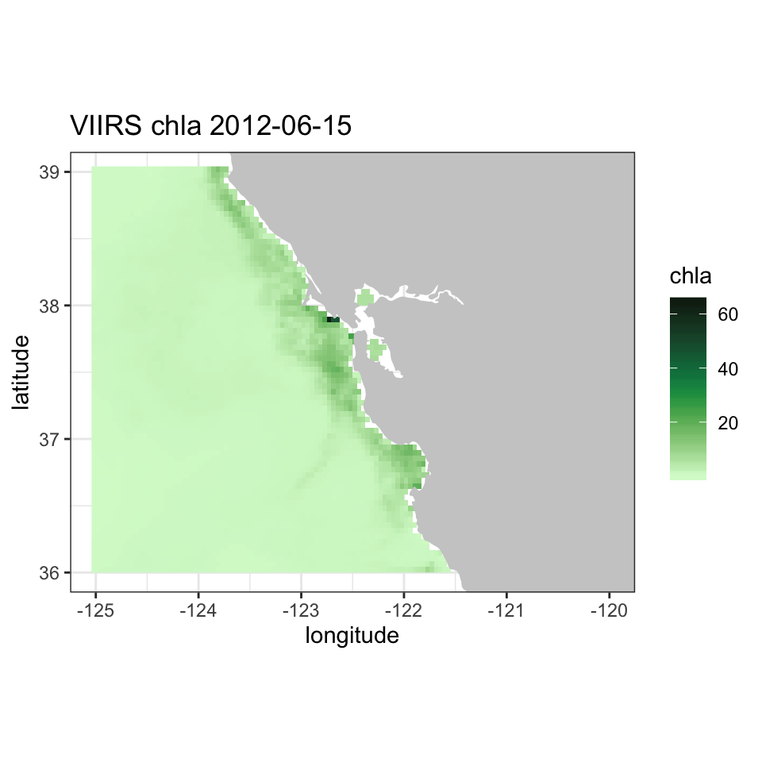
Chlorophyll values are highly skewed, with low values most places and times, and then for some locations very high values. For this reason log(chlorophyll) is usually plotted.
xlim <- c(235, 240) - 360
ylim <- c(36, 39)
chlalogFrame <- mapFrame(VIIRS$longitude,VIIRS$latitude,
log(VIIRS$data[, , month(VIIRS$time) == 6 & year(VIIRS$time) == 2012]))
chlalogPlot <- plotFrame(chlalogFrame, xlim, ylim, paste("VIIRS log(chla)", ttext))
chlalogPlot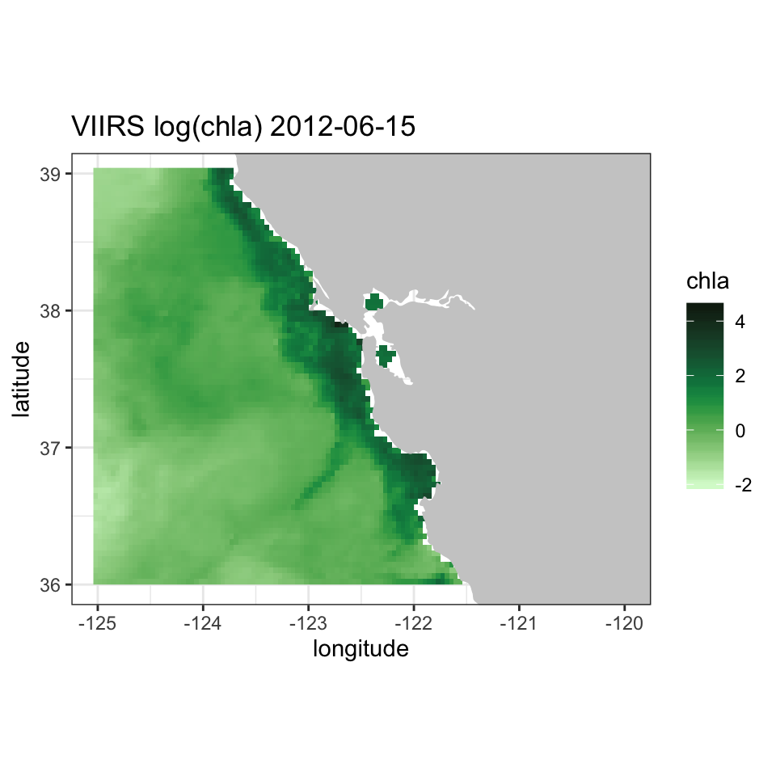
And also for MODIS:
xlim <- c(235, 240) - 360
ylim <- c(36, 39)
ttext <- MODIS$time[month(MODIS$time) == 6 & year(MODIS$time) == 2012]
chlalogFrame <- mapFrame(MODIS$longitude, MODIS$latitude,
log(MODIS$data[, , month(MODIS$time) == 6 & year(MODIS$time) == 2012]))
chlalogPlot <- plotFrame(chlalogFrame, xlim, ylim, paste("MODIS log(chla)", ttext))
chlalogPlot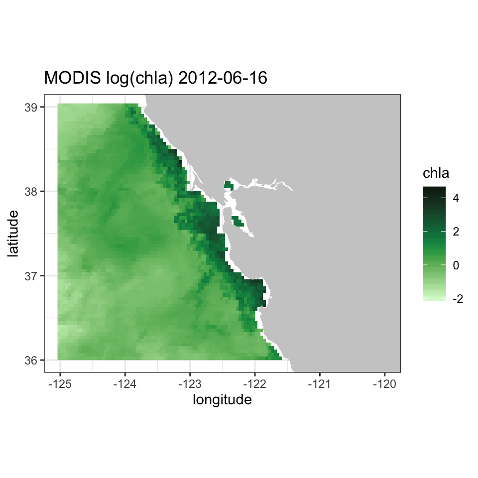
SeaWiFS stopped functioning at the end of 2010, so we look at June, 2010:
xlim <- c(235, 240) - 360
ylim <- c(36, 39)
ttext <- SeaWiFS$time[month(SeaWiFS$time) == 6 & year(SeaWiFS$time) == 2010]
chlalogFrame <- mapFrame(SeaWiFS$longitude, SeaWiFS$latitude,
log(SeaWiFS$data[, , month(SeaWiFS$time) == 6 & year(SeaWiFS$time) == 2010]))
chlalogPlot <- plotFrame(chlalogFrame, xlim, ylim, paste("SeaWiFS log(chla)", ttext))
chlalogPlot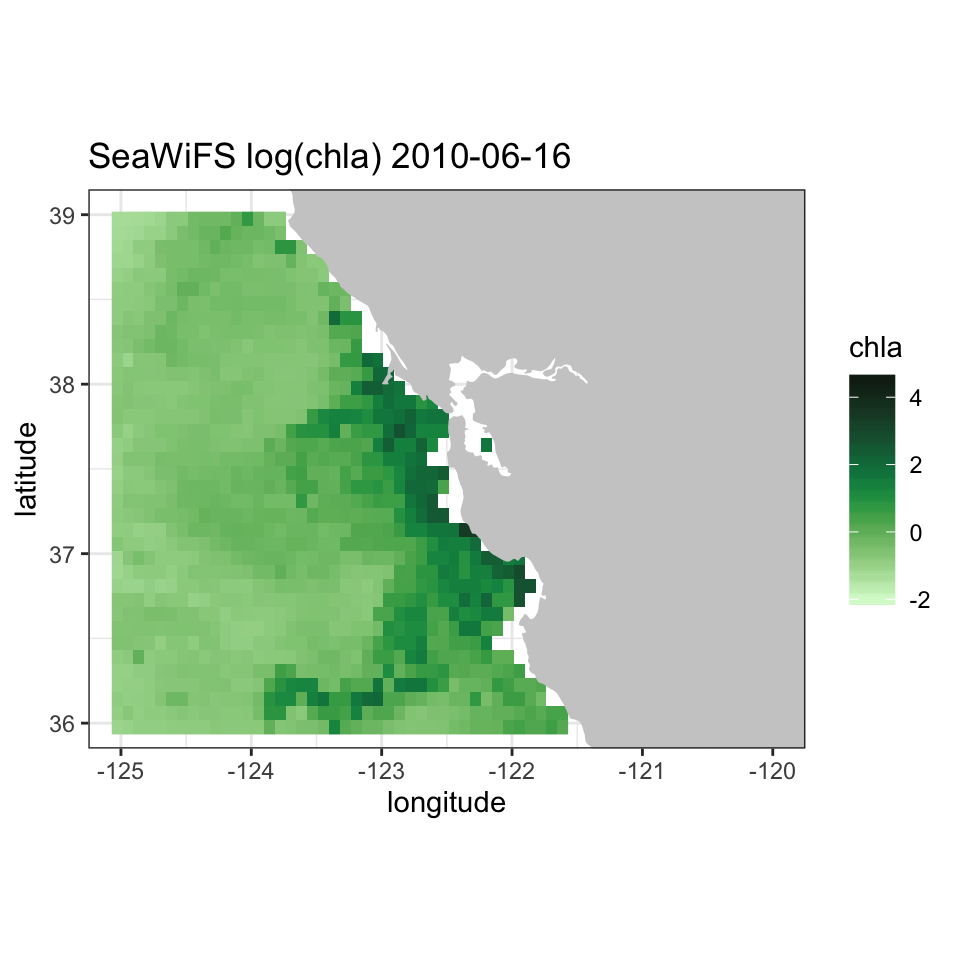
We can also look at changes in log(chlorophyll) over time for a given region. We examine a higly productive region just north of San Francisco, with limits (38N, 38.5N) and (123.5W, 123W).
require(ggplot2)
require(mapdata)
xlim1 <- c(-123.5, -123) + 360
ylim1 <- c(38, 38.5)
w <- map_data("worldHires", ylim = c(37.5, 39), xlim = c(-123.5, -122.))
z <- ggplot() + geom_polygon(data = w, aes(x = long, y = lat, group = group), fill = "grey80") +
theme_bw() +
coord_fixed(1.3, xlim = c(-123.5, -122.), ylim = c(37.5, 39))
z + geom_rect(aes(xmin = -123.5, xmax = -123., ymin = 38., ymax = 38.5), colour = "black", alpha = 0.) +
theme_bw() + ggtitle("Location of chla averaging")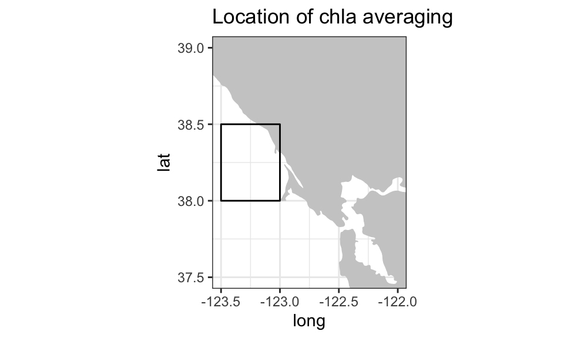
We define a helper function chlaAvg which finds the latitudes and longitudes in the datasets that are closest to the given limits, extracts the subset that is within that region, and then averages over the region to create a time series.
chlaAvg <- function(longitude, latitude, chlaData, xlim, ylim, sTimes){
xIndex <- xlim
yIndex <- ylim
yIndex[1] <- which.min(abs(latitude - ylim[1]))
yIndex[2] <- which.min(abs(latitude - ylim[2]))
xIndex[1] <- which.min(abs(longitude - xlim[1]))
xIndex[2] <- which.min(abs(longitude - xlim[2]))
tempData <- chlaData[xIndex[1]:xIndex[2], yIndex[1]:yIndex[2],]
chlaAvg <- apply(tempData, 3, mean, na.rm = TRUE)
chlaAvg <- data.frame(chla = chlaAvg, time = sTimes)
return(chlaAvg)
}We use chlaAvg to extract the three time series over the region, combine them and plot the result.
xlim1 <- c(-123.5, -123) + 360
ylim1 <- c(38, 38.5)
# Get both the average, and the average of log transformed chl for each point in the time series
SeaWiFSavg <- chlaAvg(SeaWiFS$longitude, SeaWiFS$latitude, SeaWiFS$data, xlim1, ylim1,SeaWiFS$time)
SeaWiFSlog <- chlaAvg(SeaWiFS$longitude, SeaWiFS$latitude, log(SeaWiFS$data), xlim1, ylim1, SeaWiFS$time)
# Run the same steps again for the MODIS and VIIRS datasets
MODISavg <- chlaAvg(MODIS$longitude, MODIS$latitude, MODIS$data, xlim1, ylim1, MODIS$time)
MODISlog <- chlaAvg(MODIS$longitude, MODIS$latitude, log(MODIS$data), xlim1, ylim1, MODIS$time)
# run the same for VIIRS
VIIRSavg <- chlaAvg(VIIRS$longitude, VIIRS$latitude, VIIRS$data, xlim1, ylim1, VIIRS$time)
VIIRSlog <- chlaAvg(VIIRS$longitude, VIIRS$latitude, log(VIIRS$data), xlim1, ylim1, VIIRS$time)First the raw chla values:
require(ggplot2)
Chla <- rbind(VIIRSavg, MODISavg, SeaWiFSavg)
Chla$sat <- c(rep("VIIRS", nrow(VIIRSavg)), rep("MODIS", nrow(MODISavg)), rep("SeaWIF", nrow(SeaWiFSavg)))
Chla$sat <- as.factor(Chla$sat)
ggplot(data = Chla, aes(time, chla, colour = sat)) + geom_line(na.rm = TRUE) + theme_bw()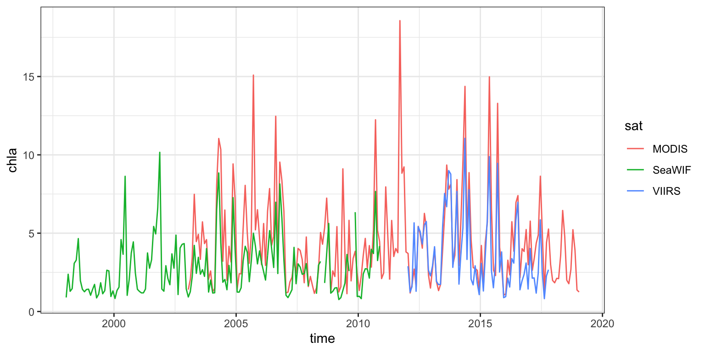
and then log(chla):
require(ggplot2)
logChla <- rbind(VIIRSlog, MODISlog, SeaWiFSlog)
logChla$sat <- c(rep("VIIRS", nrow(VIIRSlog)), rep("MODIS", nrow(MODISlog)), rep("SeaWIF", nrow(SeaWiFSlog)))
logChla$sat <- as.factor(Chla$sat)
ggplot(data = logChla, aes(time, chla, colour = sat)) + geom_line(na.rm = TRUE) + theme_bw()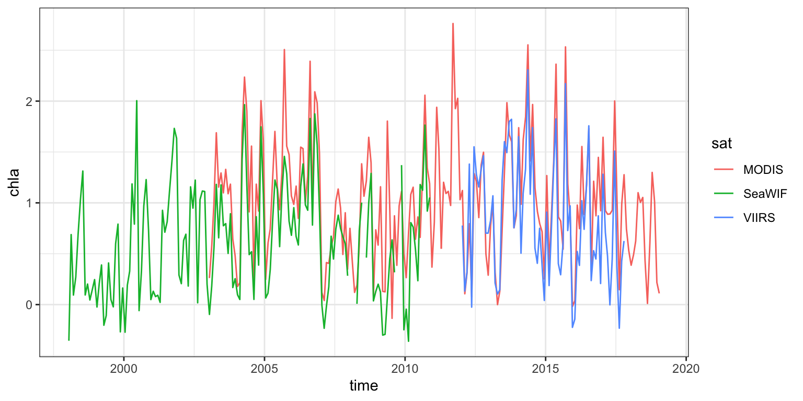
ERD for many years has produced 6-hourly Bakun upwelling indices at 15 set locations. But suppose you want the values at a different location? To do this we define a function upwell that rotates Ekman transport values to obtain the offshore component (upwelling index), and also define a function plotUpwell to plot upwelling. xtracto_3D can download Ekman transport calculated from Fleet Numerical Meteorlogical and Oceanographic Center (FNMOC) pressure fields:
upwell <- function(ektrx, ektry, coast_angle){
pi <- 3.1415927
degtorad <- pi/180.
alpha <- (360 - coast_angle) * degtorad
s1 <- cos(alpha)
t1 <- sin(alpha)
s2 <- -1 * t1
t2 <- s1
perp <- s1 * ektrx + t1 * ektry
para <- s2 * ektrx + t2 * ektry
return(perp/10)
}plotUpwell <- function(upwelling, upDates){
require(ggplot2)
temp <- data.frame(upwelling = upwelling, time = upDates)
ggplot(temp, aes(time, upwelling)) + geom_line(na.rm = TRUE) + theme_bw()
}We calculate 6-hourly upwelling at (37,-122) for the year 2005 and use the coast angle that ERD uses for (36N , 122W) which is 152 degrees.
require(xtractomatic)
xpos <- c(238, 238)
ypos <- c(37, 37)
tpos <- c("2005-01-01", "2005-12-31")
ektrx <- xtracto_3D("erdlasFnTran6ektrx", xpos, ypos, tpos = tpos)
ektry <- xtracto_3D("erdlasFnTran6ektry", xpos, ypos, tpos = tpos)
upwelling <- upwell(ektrx$data, ektry$data, 152)A plot of the result:
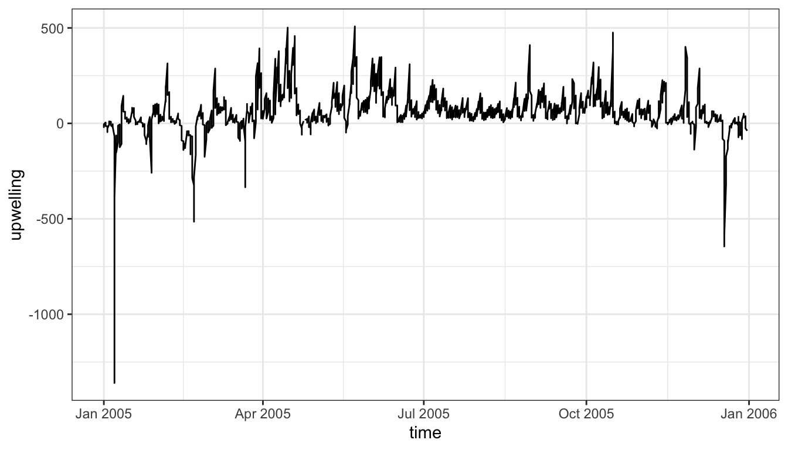
The one very low downwelling value distorts the plot, so values < -500 are set to NA and the data are replotted:
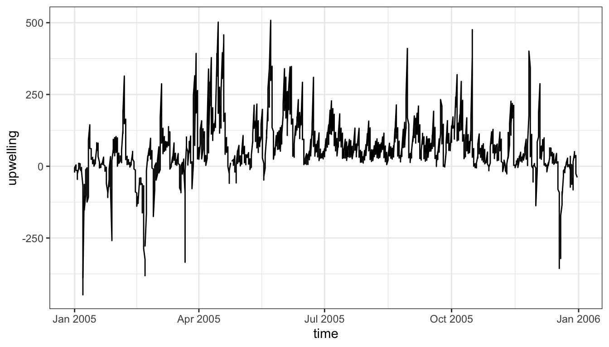
In 2005 there was a large die-off of sea animals and many felt that is was due to an anomalously delayed upwelling. Let’s compare upwelling in 2005 at that location with upwelling in 1977:
require(xtractomatic)
tpos <- c("1977-01-01", "1977-12-31")
ektrx77 <- xtracto_3D("erdlasFnTran6ektrx", xpos, ypos, tpos = tpos)
ektry77 <- xtracto_3D("erdlasFnTran6ektry", xpos, ypos, tpos = tpos)
upwelling77 <- upwell(ektrx77$data, ektry77$data, 152)
# remove the one big storm at the end
tempUpw <- upwelling77
tempUpw[tempUpw < -500] <- NA
plotUpwell(tempUpw, as.Date(ektrx77$time))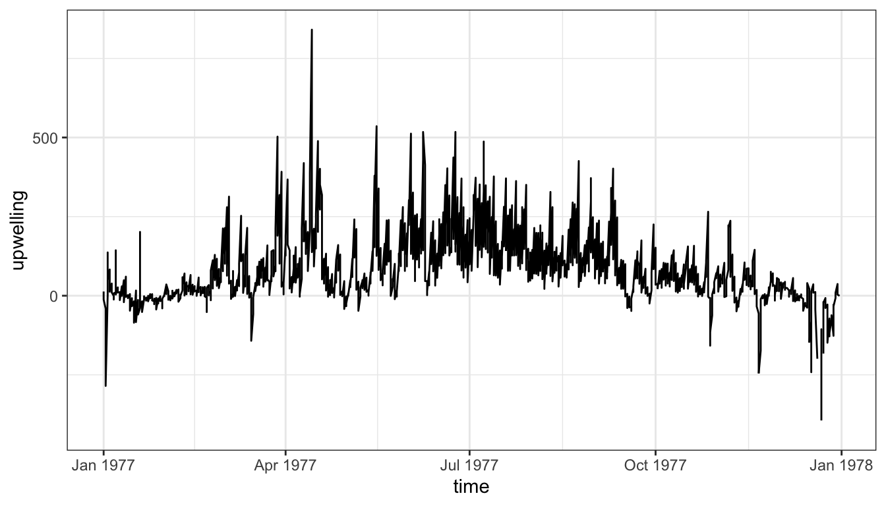
While we have not looked at all areas along the coast, at least for this location it is difficult to see upwelling in 2005 as being any more delayed than in 1977 when there was not the same affect on animals.
A problem faced when using satellite based estimates of wind stress is that the QuikSCAT based estimates start in 1999-07-21 and end in 2009-11-19, while the ASCAT based estimates start in 2009-10-03 and are ongoing. A comparison of the data over the period of overlap would be of interest.
We examine north-south wind stress (tauy) over the period of overlap at (36N, 121W) (we go a little more offshore because the satellite data is not resolved close to the coast), and compare 3-day composites of tauy. In this region tauy is the main component of upwelling as the coastline runs almost north-south and the winds are mostly from the north or north-west.
require(xtractomatic)
xpos <- c(237, 237)
ypos <- c(36, 36)
tpos <- c("2009-10-04", "2009-11-19")
ascat <- xtracto_3D("erdQAstress3daytauy", xpos, ypos, tpos = tpos)
quikscat <- xtracto_3D("erdQSstress3daytauy", xpos, ypos, tpos = tpos)Plotting the result
require(ggplot2)
ascatStress <- data.frame(stress = ascat$data, time = as.Date(ascat$time))
quikscatStress <- data.frame(stress = quikscat$data, time = as.Date(quikscat$time))
stressCompare <- rbind(ascatStress,quikscatStress)
stressCompare$sat <- c(rep("ascat", nrow(ascatStress)), rep("quikscat", nrow(quikscatStress)))
stressCompare$sat <- as.factor(stressCompare$sat)
ggplot(data = stressCompare, aes(time, stress, colour = sat)) + geom_line(na.rm = TRUE) + theme_bw()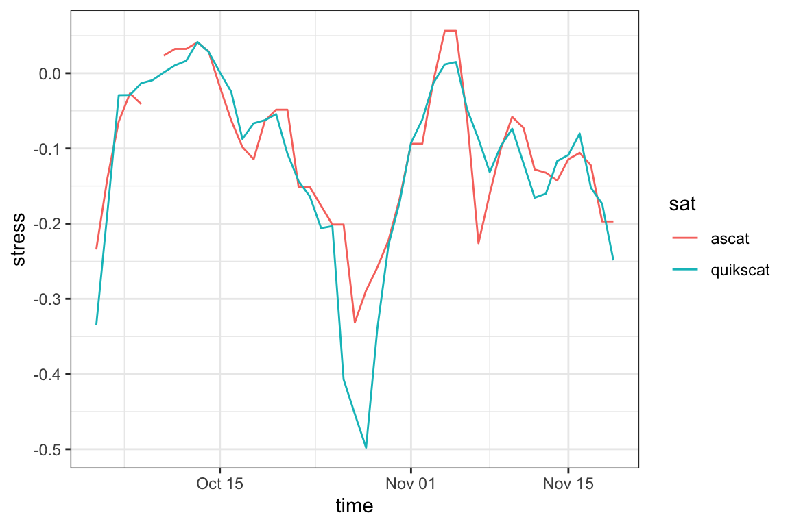
While the two wind stress series are close, there is a significant difference in the negative (southward) value on October 28, that is there will be a signifcant difference in the estimated (positive) upwelling value. Combining the series into a longer series would be desirable, but this suggests that there could be problems with inter-year comparisons due to the different sources of the data.
The ERDDAP server understands a time of “last” as being the last time period available for that dataset, and permits arithmetic using “last”, that is “last-5” is a valid time and will be 5 time periods before the last time (note that since different datasets have different time periods this difference is dataset dependent). For example to extract the last six months of SST from POES AVHRR we look at the monthly agsstmday dataset:
require(xtractomatic)
xpos <- c(235, 240)
ypos <- c(36, 39)
tpos <- c("last-5", "last")
poes <- xtracto_3D("agsstamday", xpos, ypos, tpos = tpos)Plotting the result using faceting in ggplot2:
require(ggplot2)
require(reshape2)
#> Loading required package: reshape2
require(mapdata)
melt_sst <- function(longitude,latitude,mTime,sst) {
dimnames(sst) <- list(long = longitude, lat = latitude)
ret <- melt(sst, value.name = "sst")
cbind(date = mTime, ret)
}
xpos <- xpos - 360
longitude <- poes$longitude - 360
latitude <- poes$latitude
imon <- 1:5
tmp <- lapply(imon, function(x) melt_sst(longitude, latitude, poes$time[x], poes$data[,,x]))
allmons <- do.call(rbind, tmp)
allmons$date <- as.factor(allmons$date)
my.col <- colors$thermal
w <- map_data("worldHires", ylim = ypos, xlim = xpos)
ggplot() +
geom_raster(data = allmons, aes(x = long, y = lat, fill = sst), interpolate = TRUE) +
geom_polygon(data = w, aes(x = long, y = lat, group = group), fill = "grey80") +
scale_fill_gradientn(colours = my.col) +
theme_bw() +
coord_fixed(1.3,xlim = xpos, ylim = ypos) +
facet_wrap(~date, nrow = 2)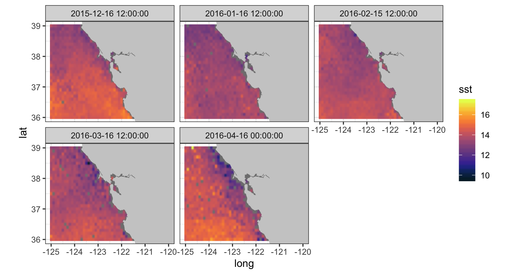
What if we want to extract data from non-consecutive time periods, for example the last six Decembers for an area? SST was unusually warm off of Catalina Island in Dec 2014, and we show this by comparing the same day in December for six years, 2009-2014:
require(reshape2)
allyears <- NULL
xpos <- c(238, 243)
ypos <- c(30, 35)
for (year in 2009:2014) {
tpos <- rep(paste(year, '-12-20', sep = ""), 2)
tmp <- xtracto_3D('jplMURSST41SST', xpos, ypos, tpos = tpos)
#ggplot is sensitve that the grid is absolutely regular
tmp$latitude <- seq(range(tmp$latitude)[1], range(tmp$latitude)[2], length.out = length(tmp$latitude))
tmp$longitude <- seq(range(tmp$longitude)[1], range(tmp$longitude)[2], length.out = length(tmp$longitude))
dimnames(tmp$data) <- list(long = tmp$longitude, lat = tmp$latitude)
ret <- melt(tmp$data, value.name = "sst")
ret <- cbind(date = tmp$time, ret)
allyears <- rbind(allyears, ret)
}
allyears$long <- allyears$long - 360
allyears$date <- as.factor(allyears$date)Plotting the result using faceting in ggplot2:
require(ggplot2)
require(mapdata)
xpos <- xpos - 360
#long<-allyears$longitude-360
#lat<-allyears$latitude
coast <- map_data("worldHires", ylim = ypos, xlim = c(-123.5, -120.))
my.col <- colors$thermal
ggplot(data = allyears, aes(x = long, y = lat, fill = sst)) +
geom_polygon(data = coast, aes(x = long, y = lat, group = group), fill = "grey80") +
geom_raster(interpolate = TRUE) +
scale_fill_gradientn(colours = my.col) +
theme_bw() +
coord_fixed(1.3, xlim = xpos, ylim = ypos) +
facet_wrap(~date, nrow = 2)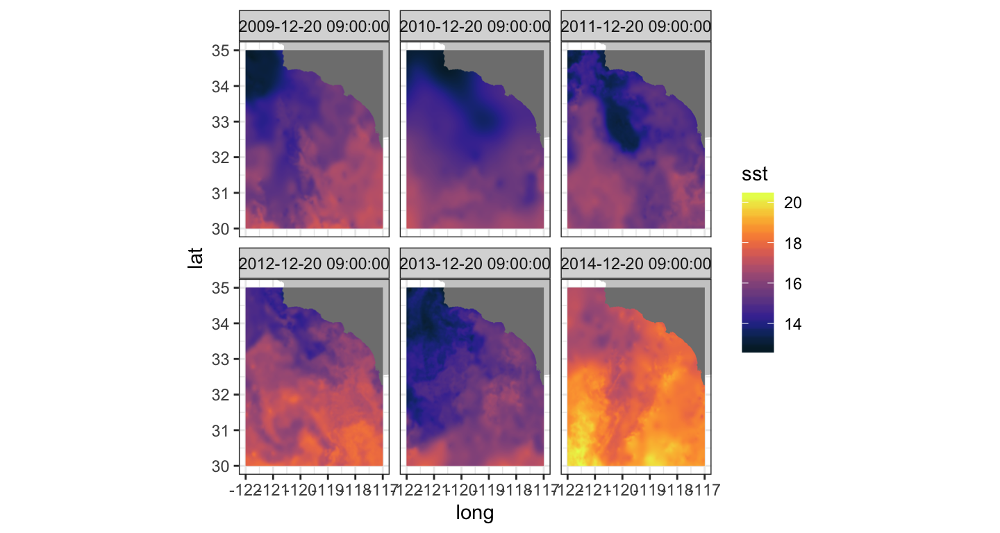
This example uses the MUR (Multi-scale Ultra-high Resolution) SST, a high quality ultra-high resolution SST produced by the MISST project.
xtractogon
The xtractogon function extracts a time-series of satellite data that are within a user supplied polygon. As an example, the boundary points of the Monterey Bay National Marine Sanctuary are available in the mbnms dataset which are loaded with the xtractomatic package. The mbnms dataset containes two variables, Latitude and Longitude, which define the boundaries of the sanctuary:
require(xtractomatic)
str(mbnms)
#> 'data.frame': 6666 obs. of 2 variables:
#> $ Longitude: num -123 -123 -123 -123 -123 ...
#> $ Latitude : num 37.9 37.9 37.9 37.9 37.9 ...The example below extracts a time-series of monthly VIIRS chlorophyll data within the MBNMS.
require(xtractomatic)
tpos <- c("2014-09-01", "2014-10-01")
xpos <- mbnms$Longitude
ypos <- mbnms$Latitude
sanctchl <- xtractogon('erdVH3chlamday', xpos, ypos, tpos = tpos )
str(sanctchl)#> List of 7
#> $ data : num [1:50, 1:57, 1:2] NA NA NA NA NA NA NA NA NA NA ...
#> $ varname : chr "chla"
#> $ datasetname: chr "erdVH3chlamday"
#> $ latitude : num [1:57(1d)] 35.6 35.6 35.6 35.7 35.7 ...
#> $ longitude : num [1:50(1d)] -123 -123 -123 -123 -123 ...
#> $ time : POSIXlt[1:2], format: "2014-09-15" "2014-10-15"
#> $ altitude : logi NAThe extract (seestr(sanctchl)) contains two time periods of chlorophyll masked for data only in the sanctuary boundaries.
require(ggplot2)
require(mapdata)
xlim <- c(-123.5, -121.)
ylim <- c(35, 38)
mbnmsFrame <- mapFrame(sanctchl$longitude + 360, sanctchl$latitude, log(sanctchl$data[, , 2]))
my.col <- colors$algae
w <- map_data("worldHires", ylim = ylim, xlim = xlim)
myplot <- ggplot() + geom_path(data = mbnms, aes(x = Longitude, y = Latitude), colour = "black")
myplot <- myplot +
geom_raster(data = mbnmsFrame, aes(x = x, y = y, fill = chla), interpolate = FALSE) +
geom_polygon(data = w, aes(x = long, y = lat, group = group), fill = "grey80") +
theme_bw() + scale_fill_gradientn(colours = my.col, limits = c(-2, 4.5)) +
ylab("latitude") + xlab("longitude") +
coord_fixed(1.3, xlim = xlim, ylim = ylim) +
ggtitle(paste("log(Chla) in MBNMS", sanctchl$time[2]))
myplot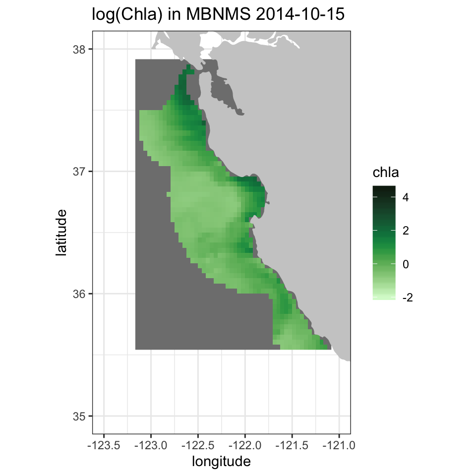
The MBNMS is famous for containing the Monterey Canyon, which reaches depths of up to 3,600 m (11,800 ft) below surface level at its deepest. xtractogon can extract the bathymetry data for the MBNMS from the ETOPO dataset:
require(xtractomatic)
tpos <- c("2014-09-01", "2014-10-01")
#tpos <-as.Date(tpos)
xpos <- mbnms$Longitude
ypos <- mbnms$Latitude
bathy <- xtractogon('ETOPO180', xpos, ypos)
str(bathy)#> List of 7
#> $ data : num [1:123, 1:141, 1] NA NA NA NA NA NA NA NA NA NA ...
#> $ varname : chr "altitude"
#> $ datasetname: chr "etopo180"
#> $ latitude : num [1:141(1d)] 35.5 35.6 35.6 35.6 35.6 ...
#> $ longitude : num [1:123(1d)] -123 -123 -123 -123 -123 ...
#> $ time : logi NA
#> $ altitude : logi NAMapping the data to show the canyon:
require(ggplot2)
require(mapdata)
xlim <- c(-123.5, -121.)
ylim <- c(35, 38)
mbnmsFrame <- mapFrame(bathy$longitude + 360, bathy$latitude, bathy$data[, , 1])
w <- map_data("worldHires", ylim = ylim, xlim = xlim)
myplot <- ggplot() + geom_path(data = mbnms,aes(x = Longitude, y = Latitude), colour = "black")
myplot <- myplot + geom_raster(data = mbnmsFrame, aes(x = x, y = y, fill = chla),interpolate = FALSE, na.rm = TRUE) +
geom_polygon(data = w, aes(x = long, y = lat, group = group), fill = "grey80") +
theme_bw() + scale_fill_gradient(na.value = NA, name = "Depth") +
ylab("latitude") + xlab("longitude") +
coord_fixed(1.3, xlim = xlim, ylim = ylim) + ggtitle("MBNMS Bathymetry")
myplot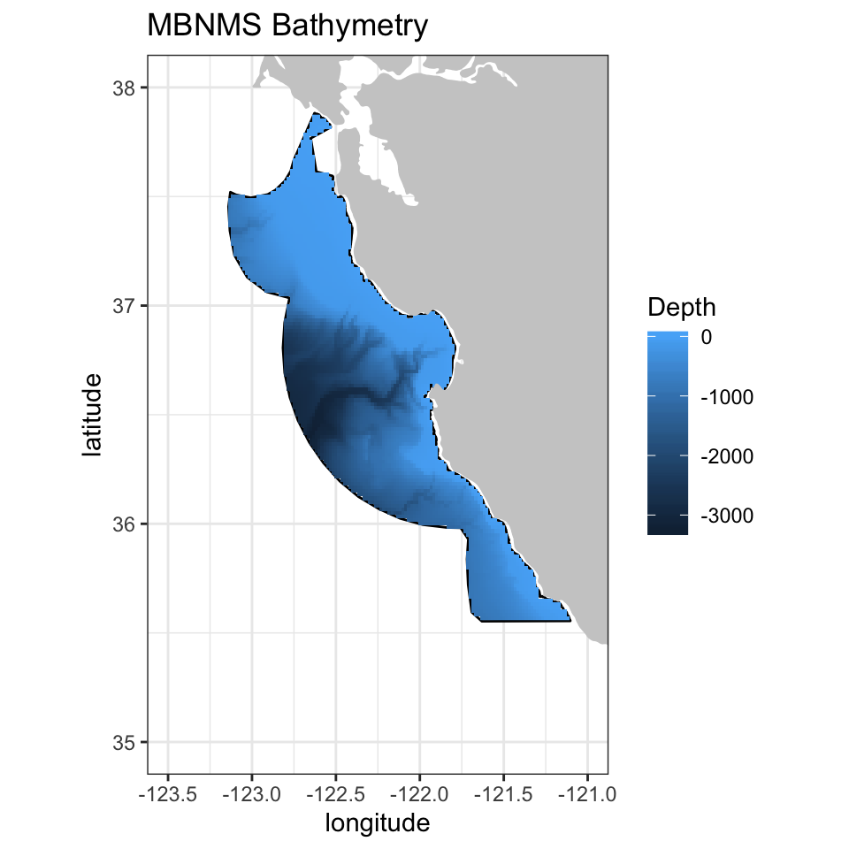
When you make an xtractomatic request, particularly for track data using the xtracto function, it is important to understand what is extracted, because the remote dataset requested likely will have a different temporal and spatial resolution then the local dataset.
Specifically, let longitude, latitude and time be the coordinate system of the remote ERDDAP dataset, and let xpos, ypos and tpos be the bounds of a request. Then the ERDDAP request is based on the nearest grid point of the ERDDAP dataset:
latitude[which.min(abs(latitude - ypos[1]))] # minimum latitude
latitude[which.min(abs(latitude - ypos[2]))] # maximum latitude
longitude[which.min(abs(longitude- xpos[1]))] # minimum longitude
longitude[which.min(abs(longitude - xpos[2]))] # maximum longitude
isotime[which.min(abs(time- tpos[1]))] # minimum time
isotime[which.min(abs(time - tpos[2]))] # maximum timewhere tpos and time have been converted to an R date format so that it is a number rather than a string. For example, the FNMOC 6-hourly Ekman transports are on a 1-degree grid. A request for the data at a longitude of 220.2 and a latitude of 38.7 will return the result at a longtiude of 220 and a latitude of 39.
As seen in the examples above, the functions xtractomatic, xtracto, xtracto_3D, and xtractogon all use the parameter dtype to specify the combination of dataset and parameter to use. The datasets accessed by xtractomatic are a subset of the almost 900 datasets available on ERD’s ERDDAP server at http://coastwatch.pfeg.noaa.gov/erddap/index.html. The datasets chosen to be accessible by xtractomatic are those that are the most useful to the majority of our users. This version of xtractomatic accesses 165 datasets. Information about a particular dataset is availble via the getInfo function. getInfo takes either the numbered value of a dataset, or the datatype name (the parameter dtypename), which is the first information returned by getInfo. getInfo does not return the number of the dataset, the use of the dtypename is encouraged rather than the number associated with the dataset. It is strongly recommended that dtype not be passed as a number, as the numbers can change and will not be used in the next version.
There are a large number of temporally composited datasets available. The temporal composite time interval is usually indicated in the dtypename (for example “phssta8day” is an 8-day composite), datasetname (for example “erdPHssta8day”) and longname (for example “SST, Pathfinder Ver 5.0, Day and Night, Global, Science Quality (8 Day Composite)”) variables associated with a dataset. The time interval between data points in the time-series is indicated by the timespacing parameter. For example note the difference in timespacing for dtypename=“mhchla8day” and dtypename=“mbchla8day”, which are both 8-day composites.
getInfo('mhchla8day')
#> List of 19
#> $ dtypename : chr "mhchla8day"
#> $ datasetname : chr "erdMH1chla8day"
#> $ longname : chr "Chlorophyll-a, Aqua MODIS, NPP, L3SMI, Global, Science Quality (8 Day Composite)"
#> $ varname : chr "chlorophyll"
#> $ hasAlt : logi FALSE
#> $ latSouth : logi FALSE
#> $ lon360 : logi FALSE
#> $ minLongitude : num -180
#> $ maxLongitude : num 180
#> $ longitudeSpacing: num 0.0417
#> $ minLatitude : num -90
#> $ maxLatitude : num 90
#> $ latitudeSpacing : num -0.0417
#> $ minAltitude : num NA
#> $ maxAltitude : num NA
#> $ minTime : chr "2003-01-05"
#> $ maxTime : chr "2019-02-14"
#> $ timeSpacing : num NA
#> $ infoURL : chr "http://oceancolor.gsfc.nasa.gov/"
getInfo('mbchla8day')
#> List of 19
#> $ dtypename : chr "mbchla8day"
#> $ datasetname : chr "erdMBchla8day"
#> $ longname : chr "Chlorophyll-a, Aqua MODIS, NPP, Pacific Ocean (8 Day Composite)"
#> $ varname : chr "chlorophyll"
#> $ hasAlt : logi TRUE
#> $ latSouth : logi TRUE
#> $ lon360 : logi TRUE
#> $ minLongitude : num 120
#> $ maxLongitude : num 320
#> $ longitudeSpacing: num 0.025
#> $ minLatitude : num -45
#> $ maxLatitude : num 65
#> $ latitudeSpacing : num 0.025
#> $ minAltitude : num 0
#> $ maxAltitude : num 0
#> $ minTime : chr "2005-12-29"
#> $ maxTime : chr "2019-03-10"
#> $ timeSpacing : num NA
#> $ infoURL : chr "http://coastwatch.pfeg.noaa.gov/infog/MB_chla_las.html"The difference is that the latter dataset (mbchla8day) is a running 8-day composite, so there is a value for every day, while the former dataset (mhchla8day) calculates composites for non-overlapping 8-day periods.
The searchData function can be used to search for a subset of that satisfy certain criteria (note that the searchData has changed since the previous version). searchData requires a list of of entries of the form “searchType:searchString”, where each element of “the first item of”searchType"" has to be one of dtypename, datasetname, longname, varname, and “searchString” is the string to search for in that field. For example to find all of the datasets that have a varname that contains chl and a datasetname that contains mday (most monthly datasets have mday in their name):
which returns among others the three chlorophyll datasets extracted in the xtracto_3D section. The search result can be easily perused by using View() or by:
If only doing the first search the code would be:
searchData iteratively refines the matches in the order given by the list, thus it can be viewed as doing a logical “AND” on the matches.
The longname of a dataset often contains a lot of this information. Alternatively you can generate a list of the datasetname and longname of all of the datasets accessed by xtractomatic (we only show the first five lines of output):
cat(paste0(xtractomatic:::erddapStruct["datasetname", 1:5],': ' , xtractomatic:::erddapStruct["longname", 1:5],"\n"))
#> list(datasetname = "erdAGssta14day"): list(longname = "sst")
#> list(datasetname = "erdAGssta1day"): list(longname = "SST, POES AVHRR, LAC, West US, Day and Night (14 Day Composite)")
#> list(datasetname = "erdAGssta3day"): list(longname = "SST, POES AVHRR, GAC, Global, Day and Night (3 Day Composite)")
#> list(datasetname = "erdAGssta8day"): list(longname = "SST, POES AVHRR, GAC, Global, Day and Night (8 Day Composite)")
#> list(datasetname = "erdAGsstamday"): list(longname = "SST, POES AVHRR, GAC, Global, Day and Night (Monthly Composite)")and then use getInfo with the datasetname to see all of the information on that dataset
xtractomatic can extract data from two topographic datasets (ETOPO) , with dtypename of “ETOPO180” and “ETOPO360”, which have longitudes ranging from -180 to 180 and 0 to 360 respectively. Currently the getInfo and searchData commands do not work with these two datasets, but xtracto, xtracto_3D, and xtractogon do.
The earlier section covers the changes to the arguments to the functions. The examples should make clear how the function calls now work.
The function searchData() no longer uses a list of list, instead it uses a simple list where the each “searchType” and “searchString” are set off by a colon as in “searchType:searchString”.
In this and all past version of xtractomatic, information about the datasets was built into the functions. In the present case the dataset information is stored in a dataframe called erddapStruct which is auotmatically loaded when you loaded the package.
This has the disadvantage that it is tied to specific datasets and a specifc ERDDAP server, rather than working with any dataset served by any ERDDAP.
The dataset was specified by the dtype, which could be either a number or a character string, and references the information in that dataframe. The dtype names in this version for the most part are same, BUT dtype AS NUMBERS ARE NO LONGER SUPPORTED. If you have used xtractomatic before you need to check that the dtype information that you are passing is what you think it is. You can do this using the supplied getInfo() or searchData() functions or peruse the erddapStruct dataframe. There are many more datasets available in this version, and now “last” can be used as time to get the last time period available for that dataset.
Every ERDDAP dataset has an ERDDAP “dataset ID”, as well one or more variables associated with that “dataset ID”. Some datasets, such as the ASCAT winds have multiple variables associated with the dataset:
https://coastwatch.pfeg.noaa.gov/erddap/griddap/erdQAstress1day.html.
This information is contained in erddapStruct$datasetname and erddapStruct$varname. Since a single dataset may have more than one variable, dtype as character string is a way to have a unique dataset id and variable name in a single variable. A more general version of xtractomatic, called rerddapXtracto, is under development. rerddapXtracto will work with any gridded dataset on any ERDDAP by using the ROpenSci package rerddap. Information on rerddapXtracto can be found at: